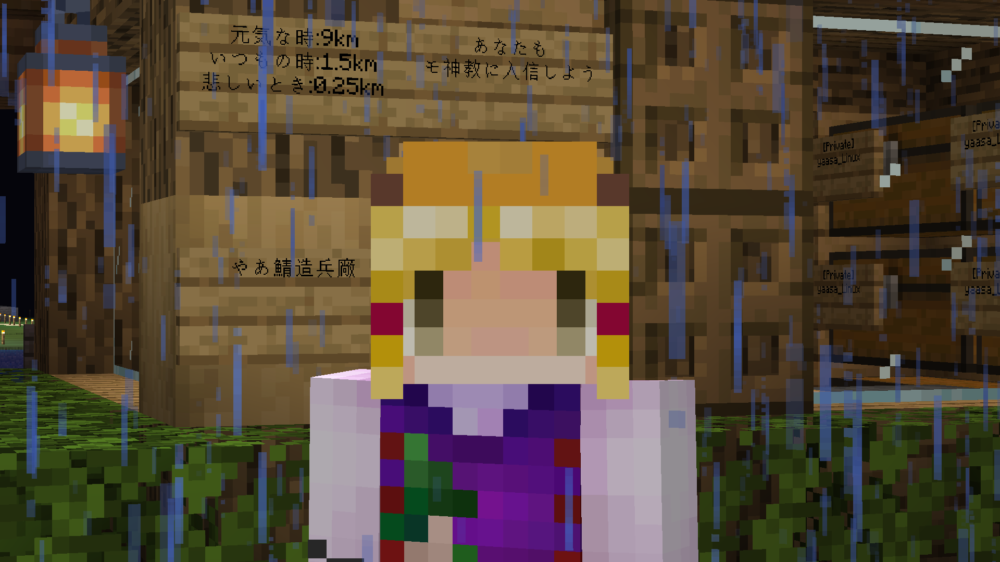

新やあ鯖はサバイバルを軸に運営しています！
推奨サーバーアドレス : game.ssnetwork.io:40100
予備用サーバーアドレス : 25.ip.gl.ply.gg:43340
推奨バージョン : 1.20.1 (ViaVersionが入っているため1.20.1以上ならできると思います)
Minecraft Java Editionでのみ参加可能です。統合版での参加希望の方はこちら(未完成)
各種リンク
公式ホームページ(このサイト): https://minecraft.wayokan.com/
公式Dynmap: https://map.wayokan.com/
公式Discord: Discord(モ神教)
管理人Twitter: @wayokan_beta
非公式ホームページ(制作者: NAO): https://minecraft.xtzi9859.f5.si/